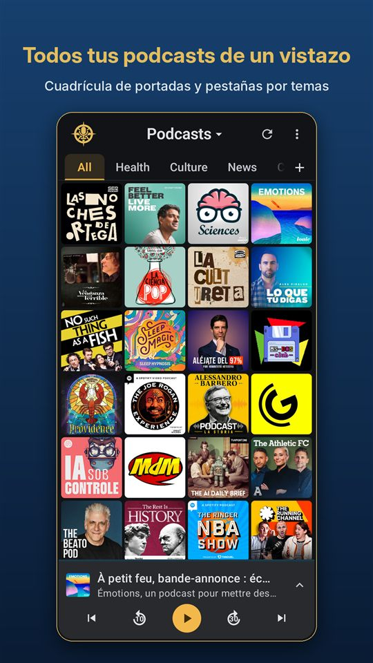
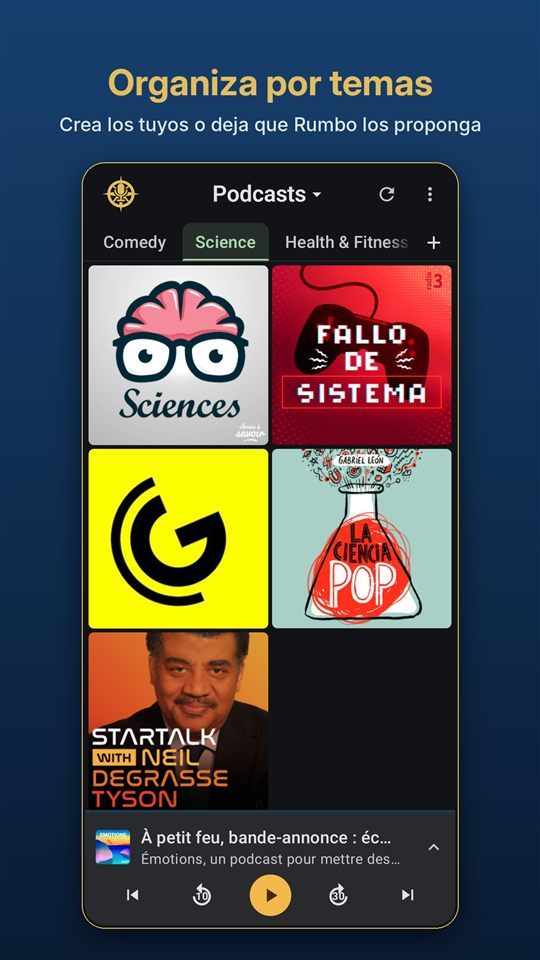
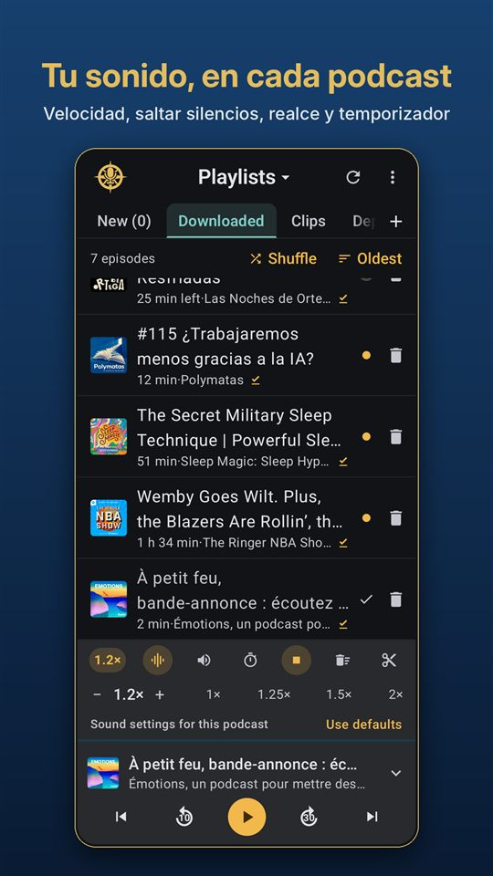
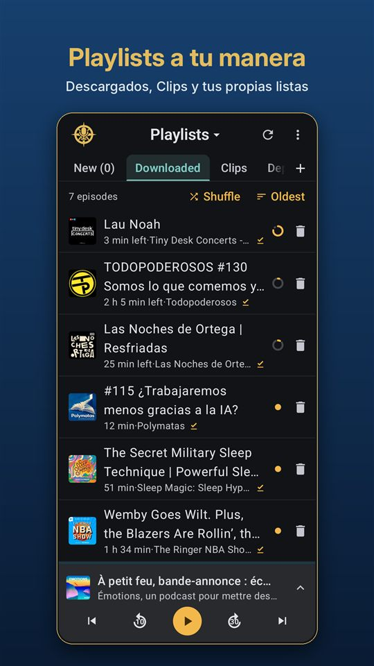
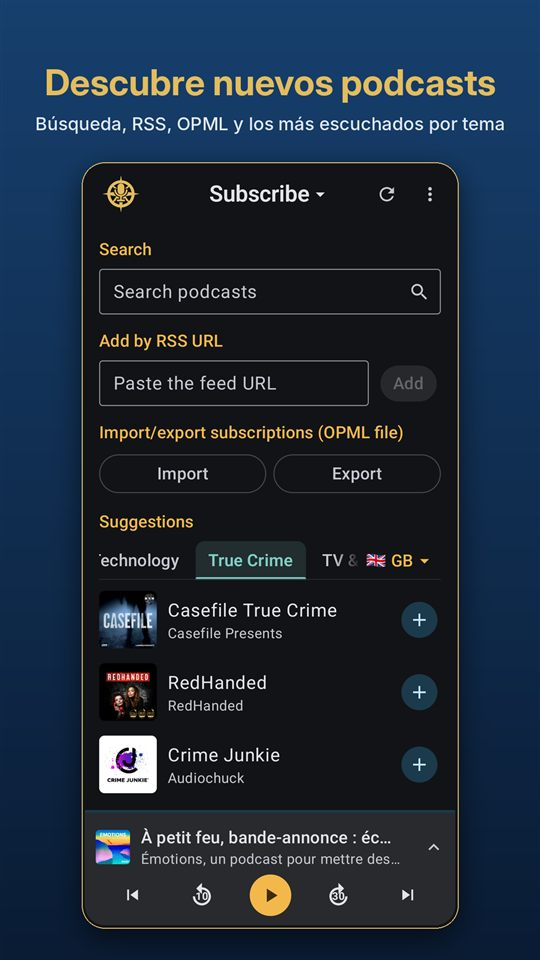

Rumbo
Un reproductor de podcasts para Android, privado, listo para escuchar sin conexión y sin cuentas, analíticas ni anuncios.
Qué hace Rumbo
- Suscríbete a tu maneraBusca por nombre, pega la dirección de un feed (RSS) o importa tus suscripciones con un archivo OPML. Las sugerencias muestran los podcasts más populares de cada categoría y país.
- ListasDescargados, Nuevos y Clips, además de tus propias listas. Ponlas en orden aleatorio y mantén el orden que quieras.
- TemasAgrupa tus podcasts en pestañas de colores. Rumbo puede proponer temas a partir de las categorías de tus podcasts.
- Escucha a tu maneraVelocidad para cada podcast, saltar silencios, refuerzo de volumen, temporizador, modos continuo, parar o repetir, y borrar al terminar.
- ClipsCorta un trozo de un episodio (hasta 5 minutos) y compártelo.
- Sin conexión primero, y también streamingLos episodios descargados funcionan sin conexión (las descargas esperan a la wifi por defecto). Los episodios que no has descargado se pueden escuchar en streaming.
- Encuentra episodiosBusca en los títulos y las descripciones de los episodios de un podcast, también sin conexión.
- Copia de seguridadExporta todo a un archivo que controlas y restáuralo cuando quieras, con una copia semanal opcional en la carpeta que elijas.
- En tu idiomaInglés, español, francés, alemán, italiano y portugués (Brasil).
Capturas




